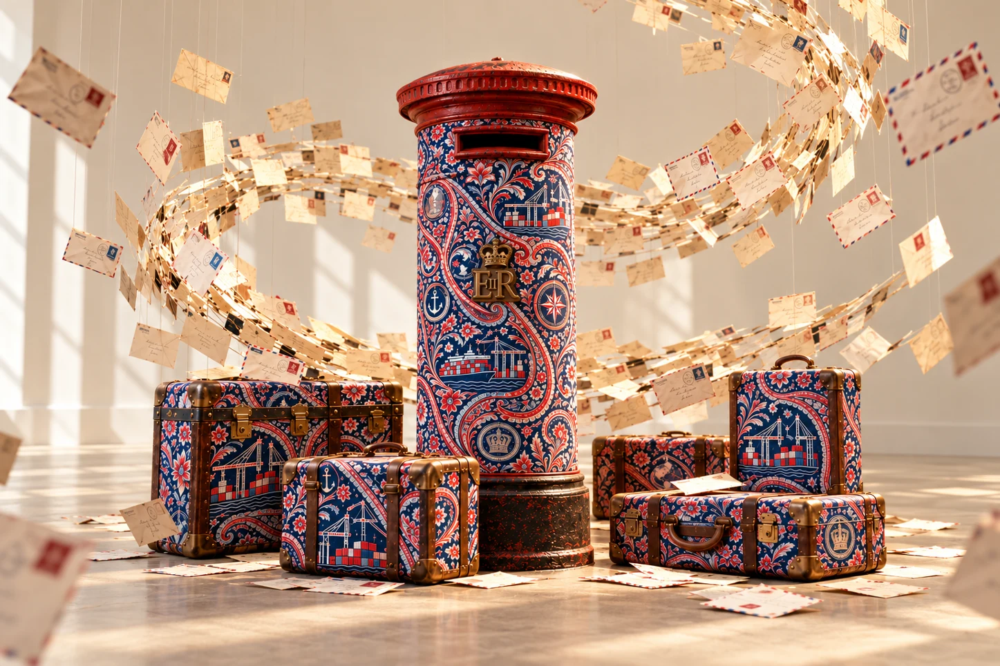
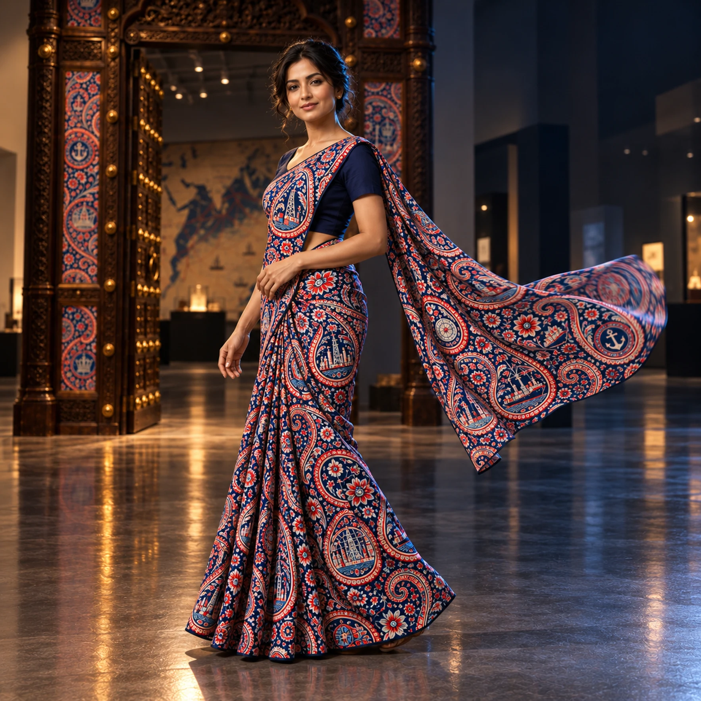
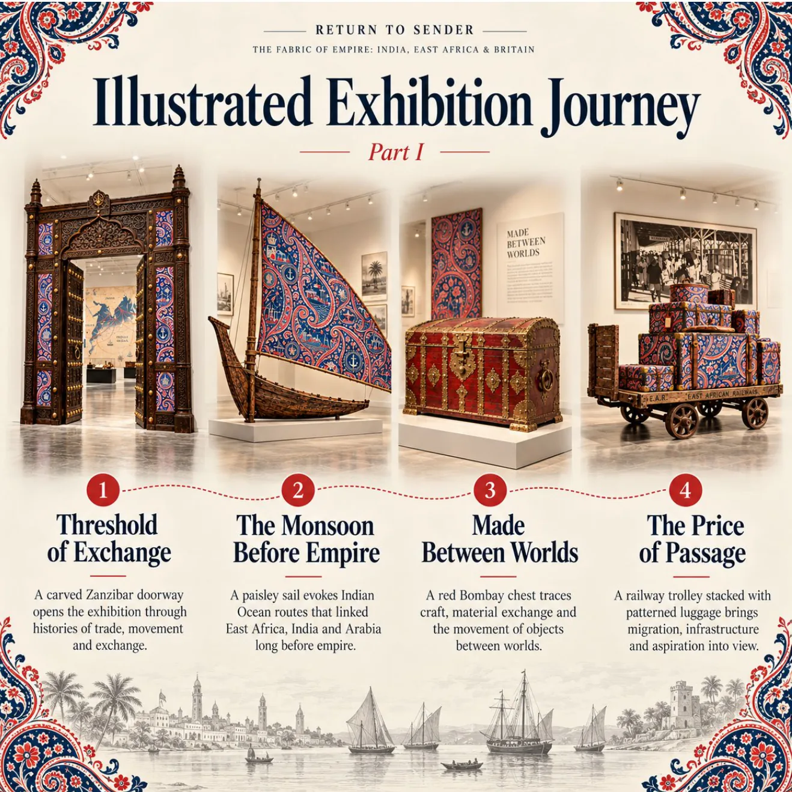

01 / THE ENTRANCEThe Threshold
The Threshold
of Exchange
A carved doorway recalls the Indian Ocean connections that existed before British rule. Entry becomes an encounter with the power to welcome — or refuse.
Home is more than a return address.
An exhibition responding to the growing hostility towards migrants — and the systems that decide who may move, remain and belong.
Enter the exhibition
The evidence of contribution matters.
— FROM THE EXHIBITION FOREWORD
Human worth exceeds it.
When “go back” becomes a political promise, what happens to the lives and histories it dismisses?
Growing hostility towards migrants increasingly shapes political life. In Britain, asylum accommodation has been targeted by intimidation. In the United States and parts of Europe, campaigns for mass deportation make the removal of people a political promise. These places have different laws and histories, but the command sounds familiar: “go back”. It presumes a single, obvious point of origin. For many families, no such uncomplicated address exists.
War, persecution and environmental change continue to uproot people; others move for work, study, family or opportunity. Some cannot afford to leave at all. Their circumstances are not interchangeable, but dignity should not depend on having the right passport, a valued profession or an exceptional story of contribution.
Return to Sender answers this moment by looking backwards: to an Indian Ocean world connected before British rule, to the institutions that reorganised movement and nationality, and to families who built lives in East Africa before travelling again.
A carved doorway, patterned dhow sail, luggage trolley, Royal Mail pillar box and telephone booth make the machinery of borders, commerce and communication visible. Photographs, letters, music and testimony return that history to the people who lived it.
“They wanted a color.— A-THRICE, 3 MIGRATIONS DEEP
I came from an empire.”
Follow the exhibition in the order of its objects — from a carved threshold to a question of belonging. Select an image to explore it more closely.
A carved doorway recalls the Indian Ocean connections that existed before British rule. Entry becomes an encounter with the power to welcome — or refuse.
Seasonal winds connected East Africa, Arabia and India centuries before modern imperial boundaries.
The red Bombay-style chest remains uncovered. Its timber, stain and pierced metalwork carry their own history of craft and exchange.
Patterned luggage draws the eye to the industrial trolley beneath. Migration is measured in effort, risk and the lives carried forward.
A pillar box connects the authority of official correspondence with the intimacy of letters travelling between families.
Inside a British telephone booth, music, broadcasts and oral histories connect several generations and shores.
A postcard-writing desk gives the visitor a place within the exchange. The story can be answered as well as received.
The route ends not with a destination, but with a question: who has the authority to decide where a person belongs?
The name remembers a Scottish town.
The pattern carries a much longer history.

The familiar curve has roots in Persian and South Asian decorative traditions, often called boteh or buta. Its earliest origins remain debated, but Kashmiri shawl makers had developed extraordinarily intricate versions long before the design became fashionable in Europe.
As imported shawls became prized in Britain, manufacturers began copying Indian designs. The Scottish weaving town of Paisley became a major nineteenth-century centre for their production, giving the pattern its familiar English name. The name identifies one industrial chapter of its history — not the place where the motif began.
A-Thrice remakes the paisley in postal red, deep navy and ivory. Inside its flowers and curves are container vessels, loading cranes, royal emblems, navigational instruments and the machinery of global trade. The artist's experience developing container-port automation gives these motifs a contemporary, technical dimension.
Wrapped around unmistakably British objects, the print asks whose labour, routes and histories lie beneath national symbols. Its beauty invites a first glance. The hidden infrastructure rewards a second.

The exhibition textile extends beyond the gallery as wearable and collectible design. Featured here as a sari, the pattern is being developed for scarves and print editions.
Buy the printFamily photographs, community documents and later oral histories recover the lives people made in East Africa, the circumstances of departure, and the places built afterwards.
Before another journey began there were schools, neighbours, businesses, gardens, languages and childhoods.
In 1972, a state deadline transformed ordinary family lives into a race for papers, passages and safety.
Resettlement brought safety and opportunity, but also the long work of rebuilding amid unequal welcomes.
Home is made and remade through family, memory, language and the lives of another generation.
Exhibition images are artist-created visualisations. Historical photographs, attributed statements and documentary facsimiles require verification against the originating collections before publication as archival evidence.
Inside the telephone booth, a six-channel archive moves between East African popular music, South Asian film songs, oral testimony and historical broadcasting.
EXPLORE THE SIX LISTENING THEMES ↓Kenyan guitar-led popular music and the recording culture of the East African coast. Artists such as Fundi Konde evoke a vibrant mid-century urban soundscape.
Curatorial selection — recordings subject to source and rights verification.
This first website edition presents the archive's themes and research, not playable historical recordings. Individual recordings and testimony require the appropriate permissions and contextual credits.

The illustrated catalogue extends the experience through essays, installation photography, artist lyrics, historical documents, family testimony and a researched listening archive.
It gives a letter room to be read, a face time to be recognised, and a sculptural object the context of the lives and systems it evokes.
The catalogue is undergoing editorial review. A public reading edition will be linked here when ready.